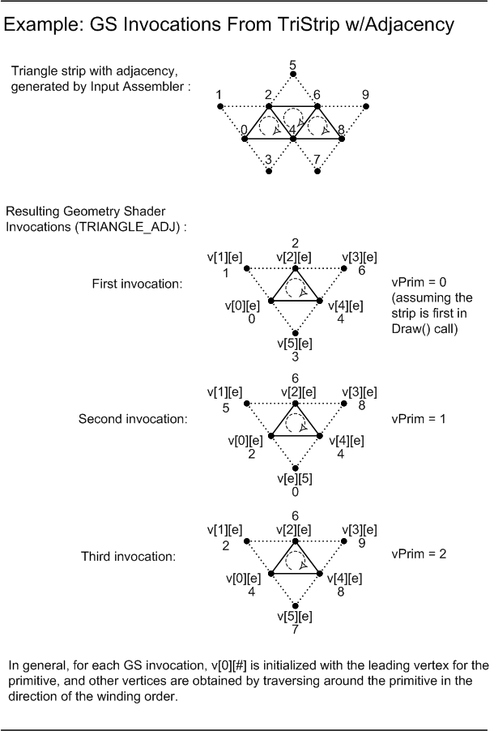

title: Geometry-Shader Object description: A geometry-shader object processes entire primitives. Use the following syntax to declare a geometry-shader object. ms.assetid: d5c1c22b-6fa6-40a8-900f-6d74f74468c1 keywords:
A geometry-shader object processes entire primitives. Use the following syntax to declare a geometry-shader object.
[maxvertexcount(NumVerts)] void ShaderName ( PrimitiveType DataType Name [ NumElements ], inout StreamOutputObject );
[maxvertexcount(NumVerts)]
[in] Declaration for the maximum number of vertices to create.
ShaderName
[in] An ASCII string that contains a unique name for the geometry-shader function.
PrimitiveType DataType Name [ NumElements ]
PrimitiveType - Primitive type, which determines the order of the primitive data.
| Primitive Type | Description |
|---|---|
| point | Point list |
| line | Line list or line strip |
| triangle | Triangle list or triangle strip |
| lineadj | Line list with adjacency or line strip with adjacency |
| triangleadj | Triangle list with adjacency or triangle strip with adjacency |
DataType - [in] An input data type; can be any HLSL data type.
Name - Argument name; this is an ASCII string.
NumElements - Array size of the input, which depends on the PrimitiveType as shown in the following table.
| Primitive Type | NumElements |
|---|---|
| point | [1] You operate on only one point at a time. |
| line | [2] A line requires two vertices. |
| triangle | [3] A triangle requires three vertices. |
| lineadj | [4] A lineadj has two ends; therefore, it requires four vertices. |
| triangleadj | [6] A triangleadj borders three more triangles; therefore, it requires six vertices. |
StreamOutputObject
The declaration of the stream-output object.
None
The following diagram shows the various primitive types for a geometry shader object.
The following diagram shows geometry shader invocations.

This example is from exercise 1 from the Direct3D 10 Shader Model 4.0 Workshop.
[maxvertexcount(3)]
void GSScene( triangleadj GSSceneIn input[6], inout TriangleStream<PSSceneIn> OutputStream )
{
PSSceneIn output = (PSSceneIn)0;
for( uint i=0; i<6; i+=2 )
{
output.Pos = input[i].Pos;
output.Norm = input[i].Norm;
output.Tex = input[i].Tex;
OutputStream.Append( output );
}
OutputStream.RestartStrip();
}
This object is supported in the following shader models.
| Shader Model | Supported |
|---|---|
| Shader Model 4 and higher shader models | yes |